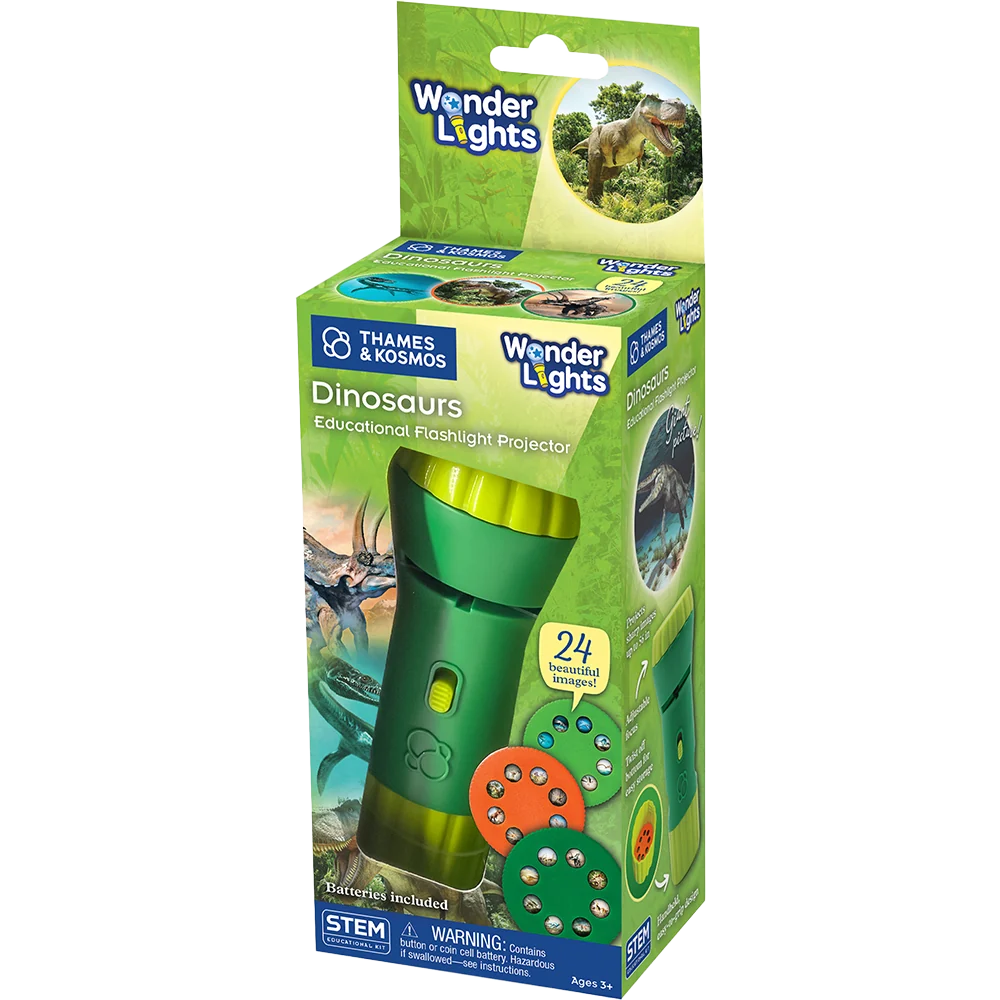
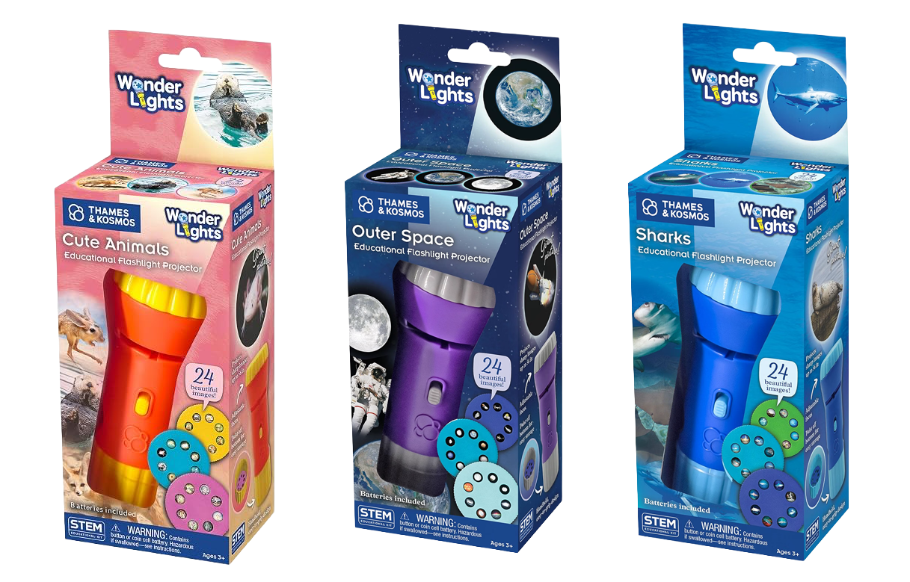
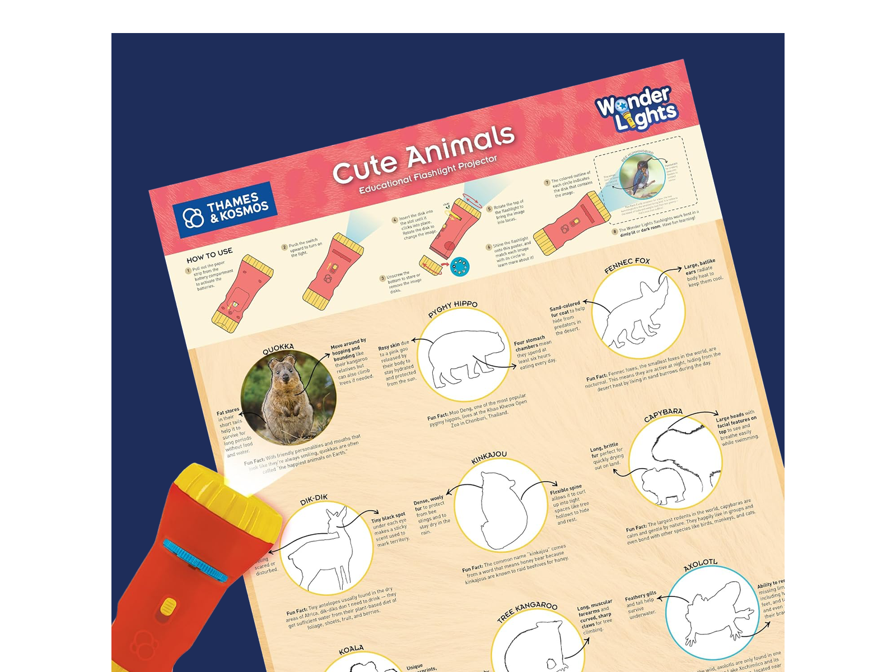
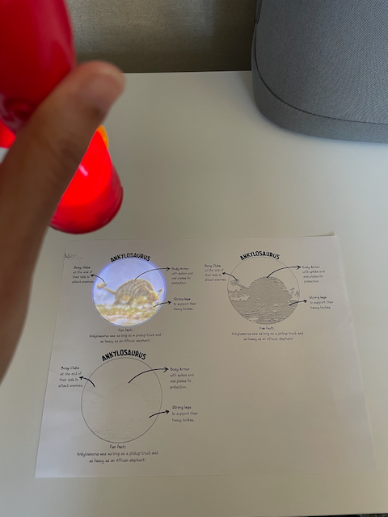
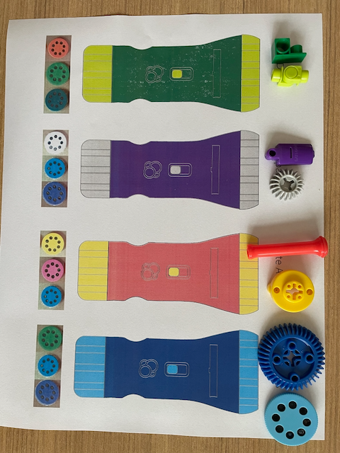
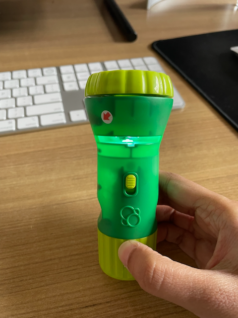
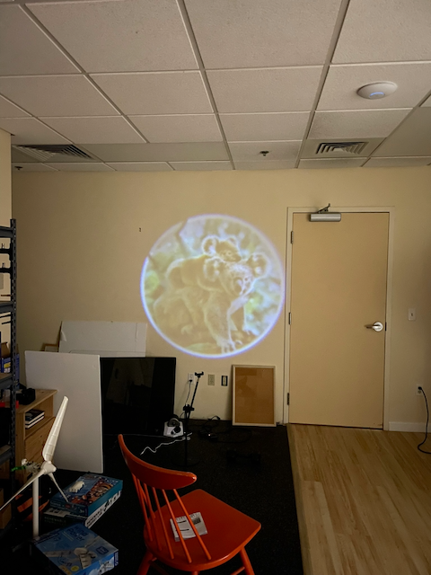

Educational Flashlight Projectors
One of my first projects at Thames and Kosmos wherein I started a new product line, the idea behind Wonder Lights was to reimagine and add more value to the classic and well-loved flashlight projector toy format. I proposed the addition of educational posters that doubled up as an instruction manual and provided a huge canvas for children to explore and learn more about each projected image, as well as a place to offer engaging prompts to reinforce the learning. During the development, the focus was also on improving the ergonomics of the product and ease of use — making the flashlight body chunkier, easy to hold for small hands and adding built-in storage for the image disks.


Wonder Lights was launched in four different themes: Dinosaurs, Cute Animals, Outer Space and Sharks.

A preview of front of the educational poster for Cute Animals: includes operating instructions, multiple fun facts about each image and interactive questions (on the back).
Process

Initial testing of the educational poster concept with different printed image styles to guide the projections.

Sending the final plastic colors to the vendor with CMF references.

Reviewing the first tooling sample for function and quality.

Testing for maximum projection size and optimum distances.